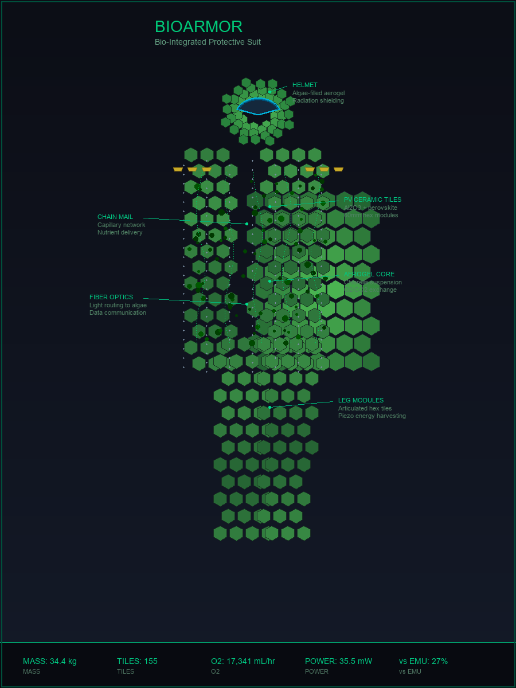
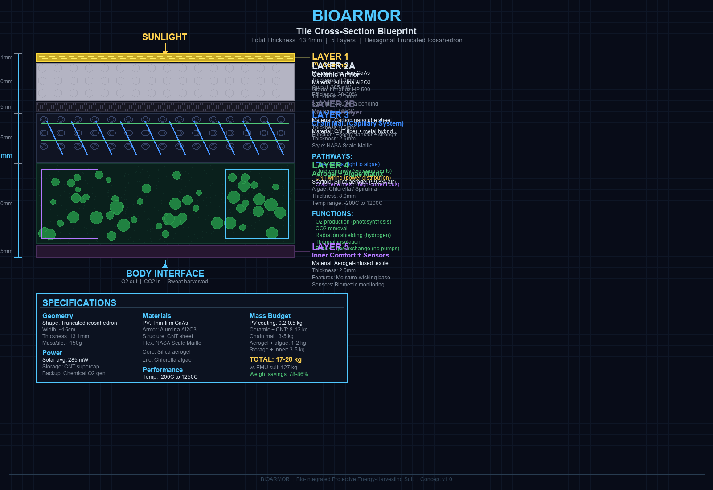

Next-Generation Bio-Integrated Spacesuit System
LighterModularBio-Augmented
Grant Briefing Deck • Reusable across NASA SBIR · NSF · DARPA · DOE • August 2026
A spacesuit system that fuses living biological systems with advanced materials — algae-based atmosphere processing, self-healing pressure bladders, 3D-printed ceramic armor, and a carbon-nanotube structural/electrical mesh.
Delivered in two configurations: a 1.5 kg daily-wear suit (V1) and a 23 kg modular exo-layer (V2) for heavy EVA.
NASA's OIG reports the U.S. has a single active EVA suit vendor (Axiom) with documented schedule risk — AxEMU is 1.5+ years behind plan.
Meanwhile, every key BioArmor material (CNT, perovskite, Surlyn, printed ceramic) has become commercially viable in the last 24 months.
Positioning: not a replacement for flight-certified life support on day one — a credible, lighter, redundant alternative developed against an open market window.
| Constraint | Today's Reality |
|---|---|
| Mass | EMU ~127 kg · AxEMU est. ~180 kg — joint fatigue, mobility cost |
| Cost | ~$150M per unit (EMU/AxEMU class) — barrier to fleet scaling |
| Vendor risk | Axiom is the sole active U.S. EVA provider (Collins withdrew 2024) — NASA OIG flags concentration risk |
| Schedule | AxEMU 1.5+ yrs behind; OIG estimates realistic lunar slip to 2031 |
| Redundancy | Limited architectural alternatives for pressurized EVA |
Opportunity: NASA OIG explicitly notes "several companies that could compete." A lighter, cheaper, more modular suit addresses both cost and resilience.
~1.5 kg · maximum mobility
Use: in-station work, light EVA, planetary surface
~23 kg · maximum protection
Use: heavy EVA, lunar/Mars surface, multi-day missions
Supplemental O₂ + CO₂ scrubbing and redundancy. Wearable algae O₂ is proven at lab scale (TAPED, ACS Nano 2025); sized as 10–30% contribution, not primary life support.
Surlyn bladder seals micrometeoroid punctures (~2 km/s proven, Polimi/ESA). CNT doping boosts healing to ~80%.
Carbon-nanotube structure is both load-bearing frame and electrical bus — now <$50/kg at commercial scale.
Perovskite PV (27.5% flexible, 1.77 W/g) + 3D-printed ceramic armor (DLP alumina, 97.5% density) + electrodynamic lunar-dust shield.
V2 exo-layer stacks onto the V1 daily-wear suit:
| PV Coating | Perovskite solar cells (0.1 mm) |
| Ceramic Tiles | 3D-printed Al₂O₃ hexagons, snap-on |
| CNT Mesh | Structural frame + electrical bus (0.3 mm) |
| Fluid Tubes | Water / nutrient transport (0.2 mm) |
| V1 Suit | Aramid/UHMWPE + bladder + algae + liner |
Full 3D models (STL) for every layer are tracked in models/.

| Parameter | V1 Integrated | V2 Modular | NASA EMU | AxEMU |
|---|---|---|---|---|
| Mass | 1.5 kg | 23 kg | 127 kg | ~180 kg |
| Cost / unit (target) | $2M | $10M | $150M | $150M |
| EVA duration (target) | 4–6 hr | 8+ hr | 6–8 hr | 8+ hr |
| Life support | Algae (supp.) | Algae + backup | PLSS | PLSS |
| Power | Passive | Solar + CNT | Battery | Battery |
| Self-healing | Yes | Yes | No | No |
These are design targets, not measured flight performance. Mass/cost reductions assume successful subsystem prototyping — see Technical Readiness.
Individually TRL 4–6 in the open literature.
System integration currently ~TRL 2–3. This is the funded work.
| Phase | Goal | Milestone |
|---|---|---|
| Yr 1–2 · Concept & Seed | Prove algae bioreactor + materials | 30-day algae test; Surlyn+CNT composite |
| Yr 2–4 · Series A & Prototype | Integrated subsystem test | Full suit prototype; vacuum + NBL test |
| Yr 4–5 · Series B & Cert | NASA safety review | Flight qualification |
| Yr 5–8 · Production | Delivery to operators | First EVA with BioArmor |
Near-term technical metrics (FUNDING.md): algae O₂ >2,500 mL/hr · self-healing >90% · CNT mesh >500 MPa · PV >35 mW avg — all within 12–18 months of seed funding.
Program Lead / CEO — [ Name ], [ e.g., 15 yrs EVA / spacesuit systems ]
CTO / Materials — [ Name ], [ e.g., PhD polymers & CNT composites ]
Bio Life-Support Lead — [ Name ], [ e.g., algae PBR / life-support research ]
Advisory Board — [ Names ], [ orgs: NASA retired, univ. labs ]
Populate with named individuals + relevant credentials before submission — reviewers weight team heavily.
| Phase | Amount | Primary use |
|---|---|---|
| Seed | $2–5M | Algae bioreactor prototype, materials testing, patents |
| Series A | $10–20M | Integrated prototype, subsystem testing, NBL/vacuum |
| Series B | $50–100M | Flight qualification, production line, certification |
Total ~$40M over 5 years to a flight-ready suit (FUNDING.md). Mix of SBIR/STTR, Tipping Point, strategic investment, and contracts.
Commercial space EVA & LSS market projected toward $23B by 2040. Multiple agency + commercial customers reduce single-buyer risk.
| Risk | Mitigation |
|---|---|
| Algae can't meet full O₂ demand | Reframed as supplemental O₂ + CO₂ scrubber + redundancy; chemical/compressed O₂ primary |
| Gamma radiation degrades Surlyn healing | Add dedicated radiation-shielding layer |
| CNT fiber release (WHO concern) | Encapsulation / containment in composite matrix |
| Cost / schedule overrun | Phased milestones; parallel traditional-suit fallback |
| No early customers | Engage multiple agencies + commercial partners upfront |
| Action | Window |
|---|---|
| Register ProSAMS (NASA) + SAM.gov | Immediate |
| NSF SBIR Phase I ($305K) | Opens Nov 4, 2026 |
| DOE SBIR Genesis/AI | ~Sept 10, 2026 |
| NASA SBIR (BAA 80NSSC26R0003) | Valid thru Sept 2027 |
| File provisional patent (algae module) | Next 30 days |
BioArmor Technologies
grants@bioarmor.space · investors@bioarmor.space · partners@bioarmor.space